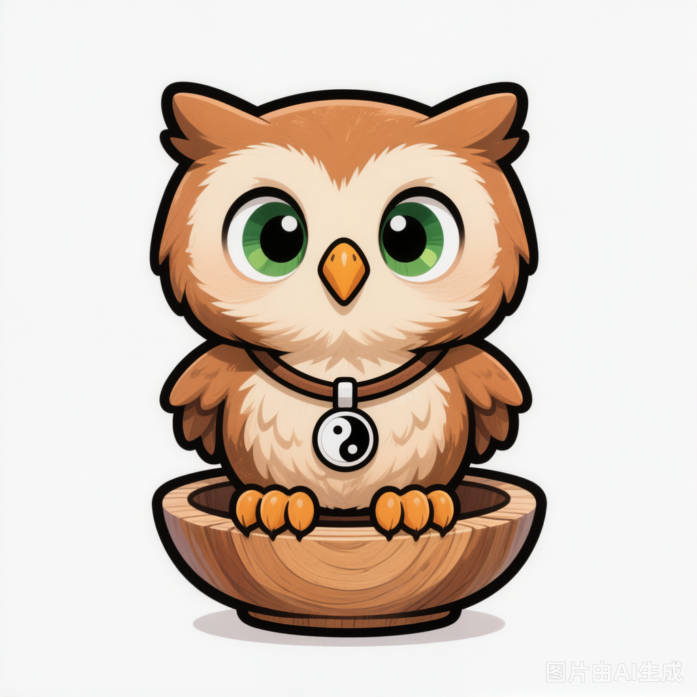

What a 1,800-Year-Old Book Taught Me About Anxiety — And Why the West Deserves to Hear It
May 23, 2026 · By Ollie
In a world accelerating toward AI and automation, why would anyone spend time studying thousand-year-old medical texts? The answer surprised even me: because the faster the world moves, the more we need something rooted.